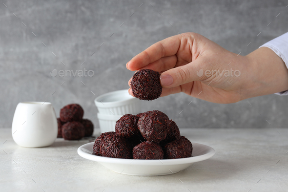
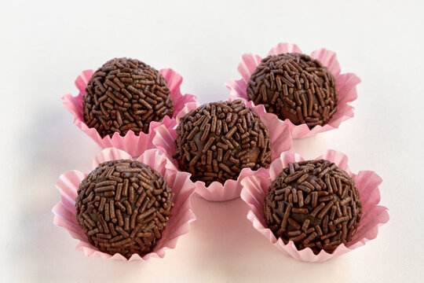

Ingredients
- Sweetened condensed milk
- Butter
- Chocolate chips or cocoa powder
- Sprinkles for coating
Instructions
- In a small saucepan, combine sweetened condensed milk, butter, and chocolate chips (or cocoa powder).
- Cook over medium-low heat for about 10-15 minutes until thick and fudgy, stirring constantly.
- Remove from heat and let it chill in the refrigerator until firm.
- Roll small amounts of the mixture into balls using lightly buttered hands.
- Coat the brigadeiros with sprinkles or other toppings of your choice.
Tips
- Cook over medium to medium-low heat to prevent sticking.
- Stir constantly to avoid burning.
- If using as a cake filling, cook slightly less or add cream for a softer consistency.
- Store in the fridge for up to 2 weeks or in the freezer for up to 2 months.
Gallery

